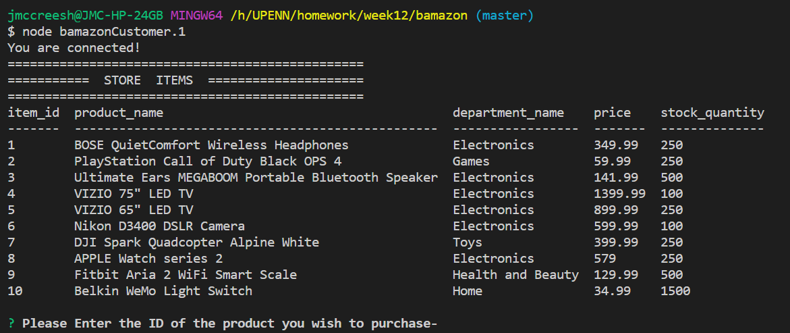
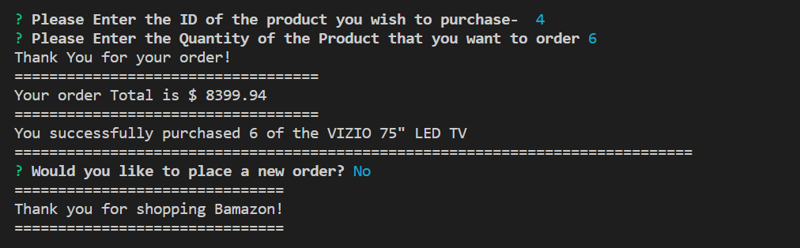
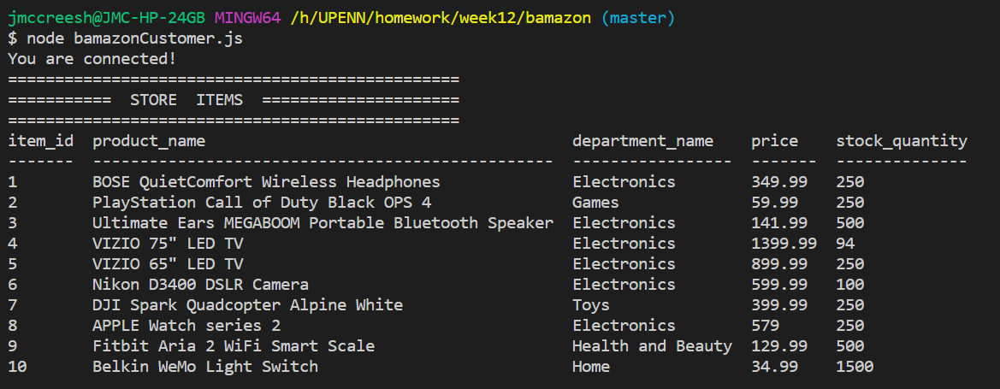
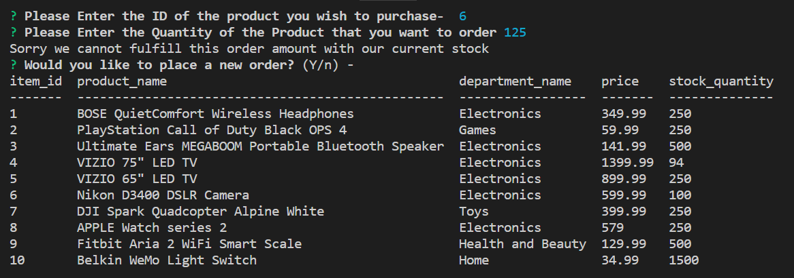

An interactive storefront that is run in console and utilizes Node.
BAMAZON storefront is a program that allows our customer to place an order from the BAMAZON store. The customer can select a product to order and the amount of the product that they wish to order. Our program will verify that the item number that they select is a valid item and check to see if it is available. If the item is not available a "Sorry we are currently out of stock" message will be displayed in the console. If the item is in stock, a "Thank you for your order!" message will be displayed in the console along with the order total and the quantity and description of the item ordered.




** Joe McCreesh**